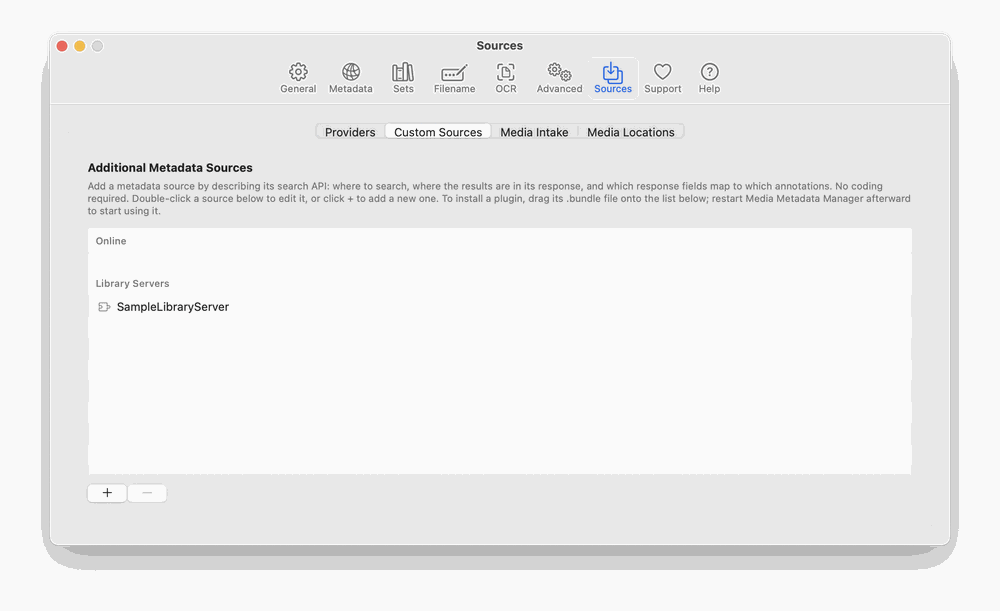
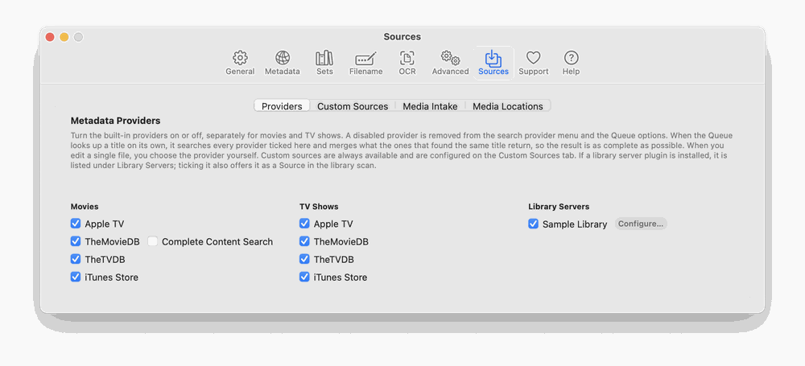

Built-in providers. TheMovieDB, TheTVDB, Apple TV and the iTunes Store. Each can be switched on or off separately for movies and TV in Preferences → Sources → Providers. The Queue’s automatic lookup searches every enabled provider and merges the results of those that found the same title: the provider chosen in Queue Options is the primary one (its title, date, studio and rating are kept), blanks are filled in from the others, cast, genre and crew lists are combined, the longest description is kept, and artwork from all of them is pooled so the Artwork choice in General can be met. A provider that found a different title is ignored. The naming window consults every enabled provider in turn. When you edit a single file you choose the provider yourself.
Custom Sources. In Preferences → Sources → Custom Sources, click + to define a source from a web API: a base address, a search address, a detail address, and a table that maps the API’s fields to M3’s tags. Each source opens in its own window. Requests time out rather than hang, and request and response bodies are written to the message log to help you debug a mapping. A new source that you close without entering anything is discarded, so clicking + several times never leaves empty “New Source” rows behind.
Plugins. A plugin is a compiled bundle placed in ~/Library/Application Support/M3/Plugins/ and loaded at launch. Plugins are never part of the app itself. To add one, drag its .bundle onto the Custom Sources list (or place it in that folder). M3 then asks whether to Restart Now or Later; plugins are loaded once, at launch, so a plugin is available after the restart. If the Queue is processing, a merge is running or a scan is in progress, M3 lists what is still running and offers Restart When Finished: it never interrupts that work, and restarts by itself as soon as the last of it is done. Removing a plugin works the same way. After the restart the plugin appears in Preferences → Sources → Providers with its own checkbox, switched on by default, and an enabled plugin is used in searches like any built-in provider. A plugin that needs settings (a server address, a key) declares them itself, and the Configure… button next to it opens a form built from that declaration. A plugin can also declare itself a library server, which makes it a Source in the Library scan (section 3.5). M3 contains no built-in knowledge of any particular plugin. Your plugin settings are stored in your own preferences, not in the app, so updating M3 never removes them.

Online and library servers. Plugins come in two kinds, and Preferences → Sources keeps them apart. A plugin that searches the web by title is an online source: it is listed in the Movies column of Providers, next to the built-in providers. A plugin for your own media server is a library server: it is listed in its own Library Servers column, and ticking it there also makes it a Source in the Library scan. In Custom Sources the list has an Online heading (your custom sources and the online plugins) and a Library Servers heading. Both the column and the headings appear only when a library server plugin is installed; without one, the Providers tab and the list look as they always have.

A library server’s address and key. A plugin for your own media server needs two things from that server: its address and a key (also called an API key or token) that lets M3 read the library without your password. The address is the computer’s name or IP address followed by the server’s port, for example http://192.168.1.20:8096; use 127.0.0.1 when the server runs on this Mac. The server’s own dashboard or network settings show its address, and a browser pointed at it should show the server’s sign-in page. Create the key in the server’s administration pages (look for API keys or tokens), paste it into the plugin’s Configure… form (the field is hidden as you type), and keep it private: never put it in chat, e-mail or screenshots, and delete it on the server if it leaks. The plugin’s own documentation lists the exact steps for its server. If the library is on another computer or a NAS, mount it on this Mac so each file appears at the path the server reports; otherwise the Library scan shows File not found.